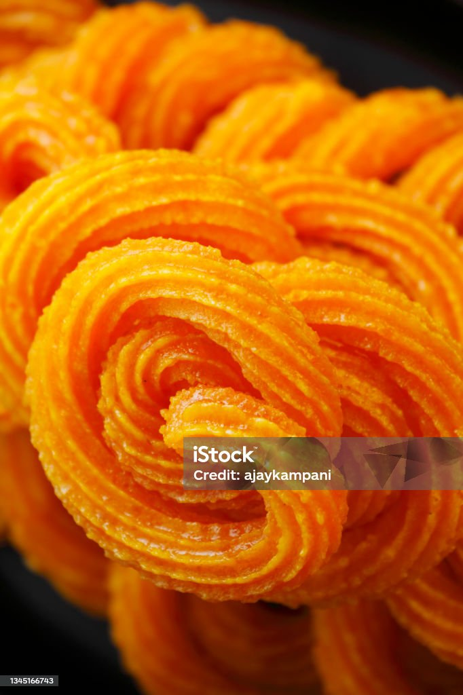

Home
Paneer Jalebi

How to make Paneer Jalebi
An authentic dessert recipe which is quite popular across North Indians. Paneer Jalebi is an amazingly delicious dish that you can make for your family and friends on special occasions and festivals. If you are tired of eating normal jalebis, you can try your hands at this mouth-watering dessert recipe which is easy-to-make. This jalebi recipe is prepared using cottage cheese, all purpose flour, and milk, and then deep-fried. The best thing about this lip-smacking sweet dish is that it has the taste of saffron and cardamom powder, with which you will have a melt-in-mouth experience. Pair it with vanilla ice cream in summer for a gastronomical delight!
Ingredients
- 300 gm cottage cheese
- 1/2 teaspoon green cardamom
- 2 cup sugar
- 6 strand saffron
- 2 cup refined oil
- water as required
- 1/4 teaspoon baking powder
- 4 teaspoon milk
- 2 teaspoon all purpose flour
Directions
- Step 1
- Boil water in a deep-bottomed pan over a high flame and mix in sugar. Stir until sugar dissolves completely. Put in a pinch of green cardamom powder and let the syrup boil. Stir for a while and add in the saffron. Once the syrup is of one string consistency, turn off the flame.
- Step 2: Knead a dough
- Now, take a dough kneading plate and add all-purpose flour in it along with baking powder, cardamom powder, and cottage cheese. Mix all the Ingredients and add enough water to knead a soft dough.
- Step 3 : Make jalebis
- Take the small amount of cottage cheese dough and make a thick-long rope-like structure out of it. Wind the dough into a circular motion of about two rounds and leave equal space between every round. Repeat the procedure till all the dough is finished.
- Step 4 : Deep fry the jalebis
- Next, put a kadhai on high flame and heat oil in it. When the oil is hot enough, gently place these jalebis in the kadhai and deep fry until golden in colour. Once the jalebi is ready, soak it in the prepared sugar-cardamom syrup. Keep the syrup pan aside and cover it with a lid.
- Step 5 : Heat again
- After a few hours, place a pan on medium flame and heat the syrup with soaked jalebis for 2-4 minutes, and then turn off the flame. Cover the pan with a lid again for half an hour and then open it, you will observe the jalebis have become bigger in size.
- Step 6 : Serve
- Serve these paneer jalebis at room temperature and enjoy with your loved ones! Make sure you try this recipe, rate it and let us know how it turned out to be.